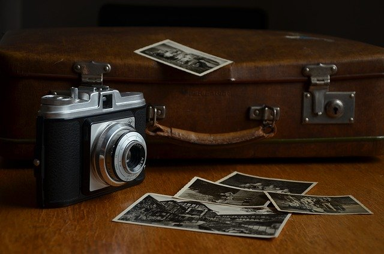
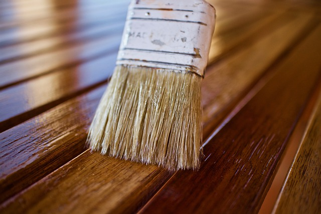

Home
Home La Mia Storia
La Mia Storia Competenze
Competenze Hobby
HobbyHobby
Io (almeno fino ad'ora) non ho mai avuto hobby abituali, ma solo cose che mi appassionano per un certo momento, mi spiego meglio: Mi piace per esempio la fotografia, perchè quando vedo delle cose interessanti mi piace portarmelo con me, con una foto, mi piace lo sviluppo software e lo bricolage. In poche parole si trattano di cose che mi appassionano sul momento, ma non cose a cui penso sempre. Descrivo qui comunque quelli che mi colpiscono più frequentemente:

La mia passione per la fotografia è nata qualche anno fa, quando scoprii che gli scatti potevano essere venduti,
volendo farmi qualche spicciolo provai a fare qualche scatto con lo smartphone, purtroppo non riuscii a vendere nessuno scatto,
ma mi rimase la passione per la fotografia: infatti non appena vedo un soggetto (animale, paesaggistico o qualsiasi
altro tipo di soggetto) scatto subito una foto, per poterla inserire nella mia raccolta. Ho fatto un profilo  Instagram
dove ho pubblicato alcuni dei miei scatti (non tutti, solo i più recenti).
Instagram
dove ho pubblicato alcuni dei miei scatti (non tutti, solo i più recenti).
Un altro hobby che spesso mi impegna è lo sviluppo software (anche perchè vorrei farlo come lavoro e mi
impegno per affinare e migliorare le mie competenze), alcune volte ho alcune idee di progetti da sviluppare, quindi opero
in questo modo:
la materia che studiai all'università "sviluppo prodotto" mi insegnò che per ogni progetto di sviluppo, bisogna prima
chiarire bene su cosa sviluppare, poi pensare al come, quindi mi chiarisco bene le idee per dare una forma, chiarendomi quindi
su cosa sviluppare (bisogni da soddisfare ecc.), poi penso al come (script, sito, app ecc.), avendo chiarito come, cerco di capire
quali sono le mie lacune che mi possono impedire nello sviluppo di tale progetto e studio affinchè io non abbia più alcun ostacolo!
Avendo tutto pronto comincio allo sviluppo vero e proprio del progetto (come già detto alcuni di questi progetti sono pubblici su
 GitHub).
GitHub).
 Altre volte "le idee" non sono di sviluppo software, spesso mi impegno a fare delle piccole cose di bricolage: ad esempio mi serviva un manico che mi servisse a sistemare la legna che arde nel camino, così creai un manico in ferro, con un manico in legno di pino che fosse utile al questo scopo, oppure vidi un vecchio pezzo di legno (simile ad un abat-jour) e procedetti al restauro per creare un discreto abat-jour.
Come ho raccontato su "La Mia Storia", sono andato a vivere in Germania: infatti da quel momento (ovviamente dovuto anche alla necessità), sperimentai molte cose in cucina, imparando a cucinare ed inventare nuovi piatti. Imparai ad utilizzare i sensi del gusto e dell'olfatto in cucina, in modo che questi due "collaborino". Io non amo seguire le ricette, ma a me piace molto sperimentare e associare vari ingredienti in modo da creare miei piatti personalizzati. Sulla cucina io dico sempre che "l'inventore dei maggiori piatti che oggi conosciamo (pizza margherita, carbonara ecc.) non seguì una ricetta per le sue creazioni", questo mi incoraggia molto a provare e sperimentare nuovi piatti e accostamenti (accettando il rischio di andare a dormire senza cena, ma fortunatamente fin'ora non è successo).